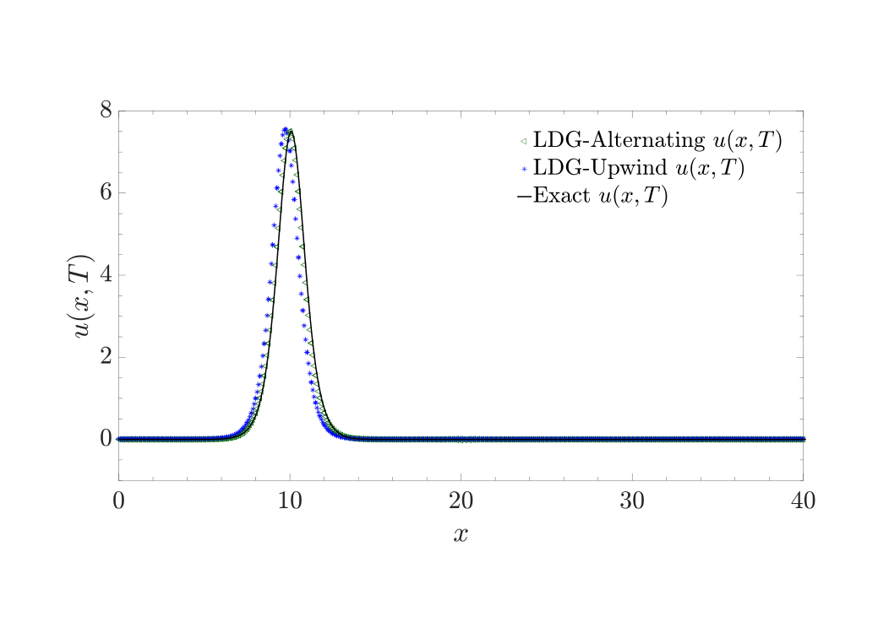
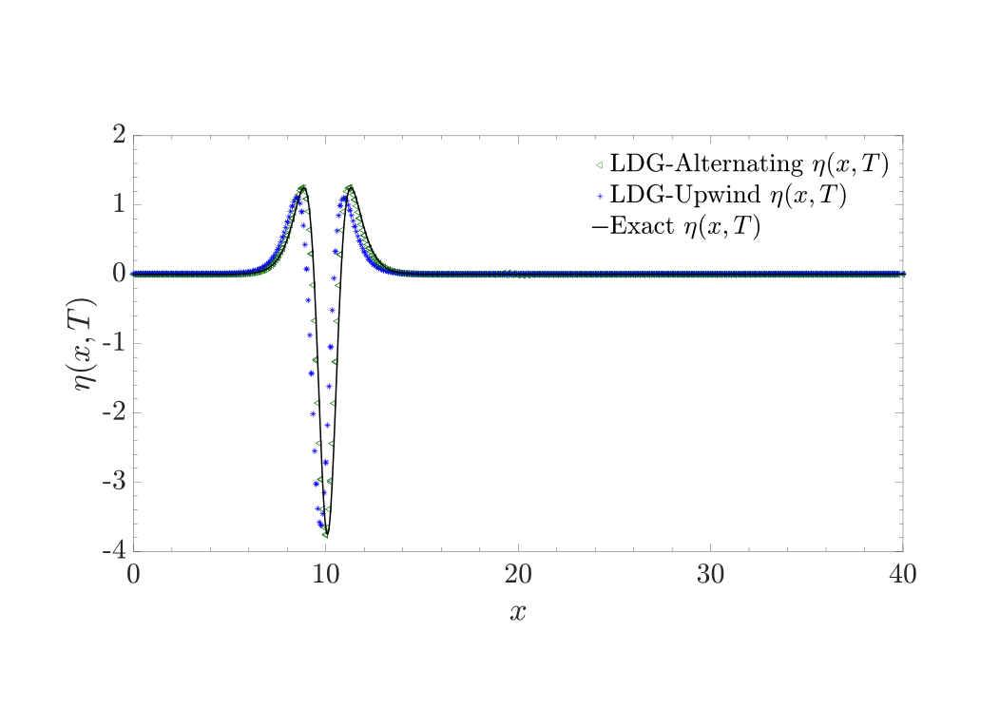
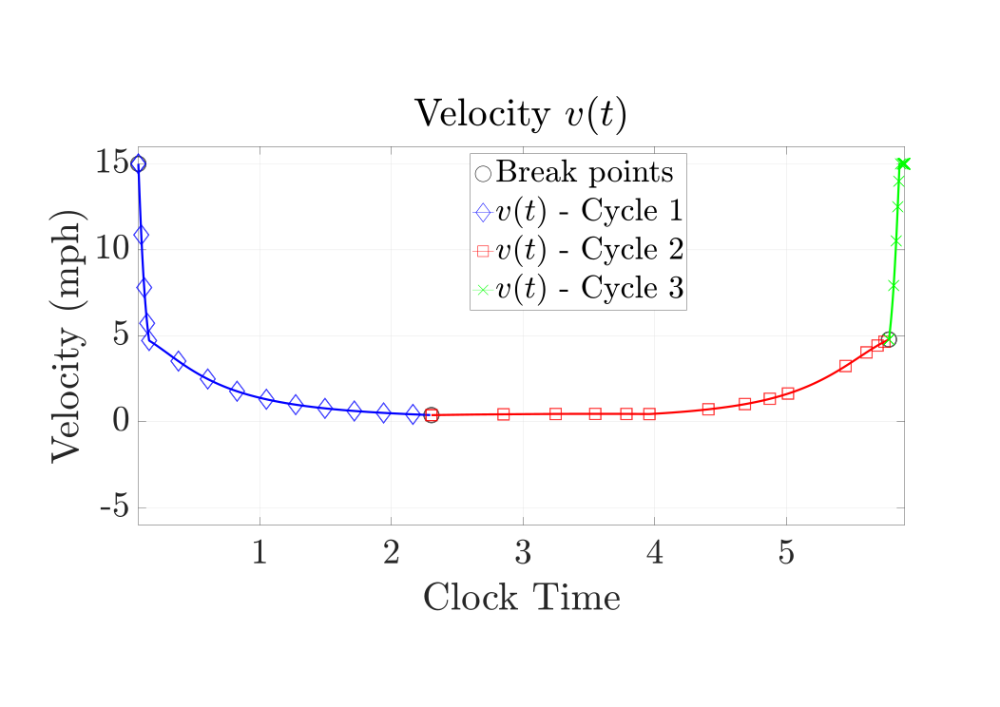
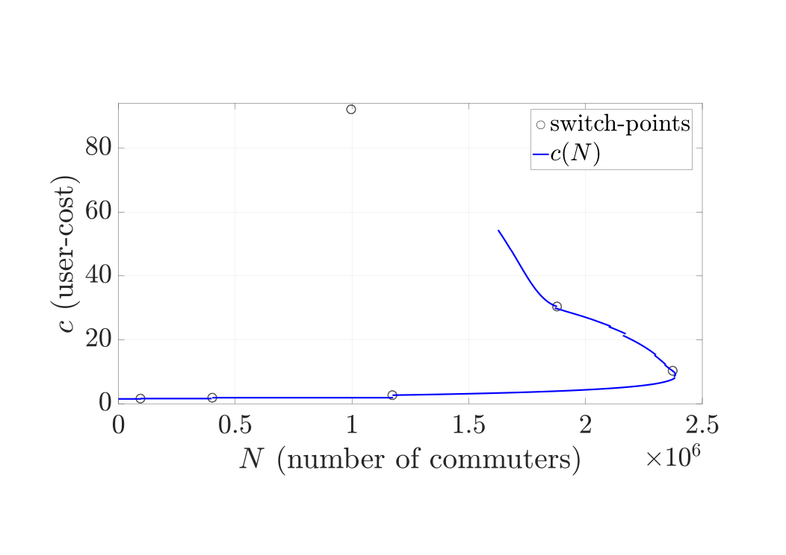

RESEARCH
Research Interests
My general research interest is in the design and application of computationally efficient numerical methods for partial differential equations and stochastic partial differential equations. Some specific methods and applications include:
- Discontinuous Galerkin (DG) and local discontinuous Galerkin (LDG) methods
- DG method applied to hyperbolic flows on networks
- Intrusive and non-intrusive methods for stochastic partial differential equations: Monte-Carlo, multi-level Monte Carlo (MLMC), generalized polynomial Chaos (gPC), stochastic collocation methods
- Algorithms for delay differential equations arising in traffic conngestion problems
- Multi-phase flow models for blood clots
FIGURES
Buli and Xing (2018)

Arnott and Buli (2018)
